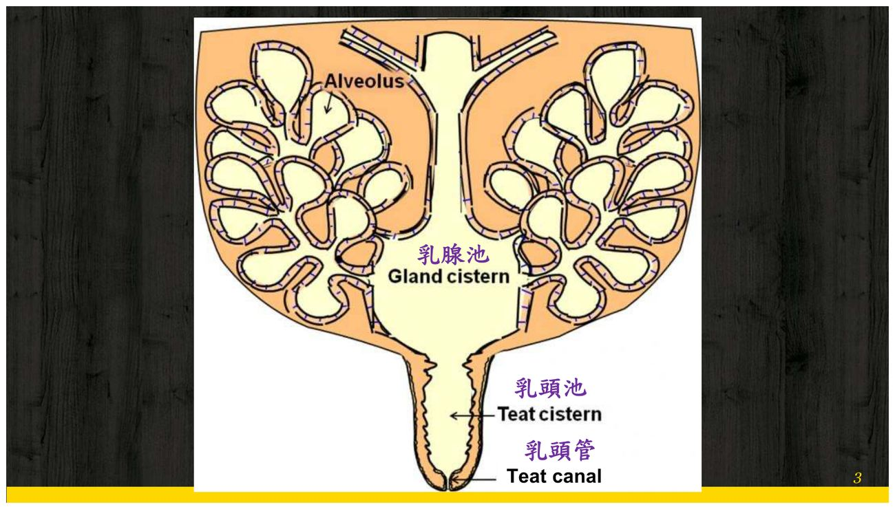
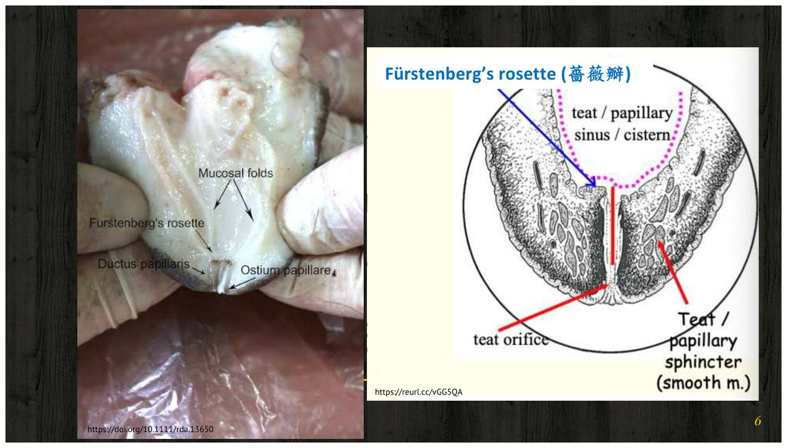
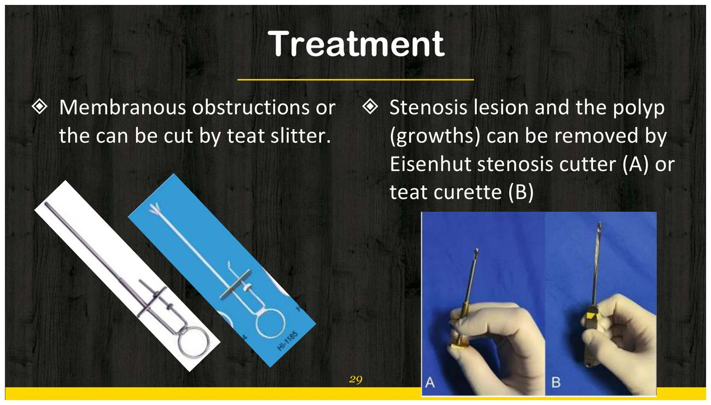

大方向與重點摘要
- 這堂課在講什麼
- 講義分兩部分（p.1–32）：① 乳頭裂傷（teat lacerations）——怎麼判斷要不要縫、怎麼麻醉、怎麼分層縫合、術後怎麼讓乳汁流出；② 乳流問題（milk flow issues）——產後沒有乳或乳流很慢的原因、診斷與用器械處理。
- 為什麼重要
- 乳頭受傷在乳牛很常見（被尖銳物割到、被自己或別頭牛的蹄踩到、榨乳機造成），處理不好會提早淘汰（p.8）。乳頭的關鍵是乳頭管（teat canal）與括約肌：它是防止細菌進入乳房的屏障，手術和術後照護都在保護它。
- 這章要抓的重點
-
- 構造：乳腺池 → 乳頭池 → 乳頭管；乳頭池與乳頭管交界的薔薇瓣（Fürstenberg's rosette）。
- 分級：沒傷到黏膜層 → 包紮；傷到黏膜層 → 儘快縫合，避免感染與瘻管。
- 麻醉：修蹄架保定（必要時鎮靜）；乳頭基部環狀阻斷（ring block）；或乳頭管內灌 5–10 mL lidocaine 做表面麻醉。
- 縫合：乳頭基部綁止血帶 → 清洗 → 修整創緣 → 黏膜、肌層—黏膜下層分開以 3-0／4-0 合成單股可吸收線單純連續縫合 → 皮膚以 1-0／2-0 不可吸收線單純間斷或 near-far-far-near → 拆止血帶、檢查漏乳。
- 術後：留置乳頭管（Larson's teat tube）或拋棄式擴張棒一週；用乳頭導管引流，不用手或機器擠乳；乳房內＋全身抗生素；10–14 天拆線。縱向裂傷預後較好。
- 乳流問題：外傷、感染、乳石、先天異常；狹窄最常在薔薇瓣（47%）；乳石用強力擠乳或 teat extractor，膜狀阻塞用 teat slitter，狹窄與息肉用 Eisenhut cutter 或 teat curette。
- 容易混淆
- 黏膜層與肌層—黏膜下層用的是細的可吸收單股線（3-0／4-0），皮膚用的是粗的不可吸收線（1-0／2-0）。乳頭狹窄的四個位置與百分比（47／35／12／6）。乳頭導管（teat cannula，擠乳時引流用）與留置乳頭管（self-retaining teat tube，一週內保持乳頭管通暢）用途不同。
- 考試可能怎麼問
（推測） - 乳頭裂傷何時包紮、何時縫；兩種麻醉方式與 lidocaine 量；分層縫合的層次、縫法與線號；術後為什麼要放乳頭管、為什麼不擠乳；影響預後的因素；無乳的原因與診斷工具；狹窄最常發生的位置；各種器械對應哪種阻塞。
內容以老師講義為主體（p.N 連到右側講義）。標「補充」的段落是講義以外的延伸，標「推測」的是出題方向推測，不是考古題（目前收集到的大外期中考古沒有出過乳頭手術）。2020 年 B06 共筆沒有這堂課。圖片為老師講義截圖。
尖銳物、蹄踩、榨乳機
有沒有到黏膜層
或乳頭管內 lidocaine
抗生素、10–14 天拆線
乳頭的構造 Teat Anatomy理解
縫合時要知道自己在縫哪一層，也要知道乳頭管與括約肌為什麼不能傷到（p.3–7）。


| 構造 | 位置與意義 |
|---|---|
| 乳腺池 Gland cistern | 乳房內收集乳汁的空腔，往下接乳頭池 |
| 環狀皺褶 Annular fold | 乳腺池與乳頭池交界；乳頭狹窄的位置之一（6%） |
| 乳頭池 Teat cistern | 乳頭內的空腔；中段狹窄佔 12% |
| 薔薇瓣 Fürstenberg's rosette | 乳頭池與乳頭管交界的放射狀黏膜皺褶；乳頭狹窄最常見的位置（47%） |
| 乳頭管 Teat canal ＋括約肌 | 乳頭末端通往外界的細管；乳房對抗細菌的屏障；狹窄佔 35% |
乳頭受傷與分級 Teat Injury必考
乳牛的乳頭受傷很常見，判斷關鍵只有一個：傷口有沒有深到黏膜層（p.8–10）。
原因
- 被尖銳物割傷
- 被蹄踩傷（自己的或其他牛的）
- 榨乳機造成
- 後果：可能導致乳牛提早淘汰
處理分級
→ 包紮（bandaging）即可。
→ 儘快縫合（suture ASAP），目的是預防細菌感染與瘻管形成（乳汁從傷口漏出，teat fistula）。
保定與麻醉 Sedation & Anesthesia必考
乳頭手術在修蹄架上做，必要時鎮靜；麻醉有兩種方式（p.11–13）。
裂傷修補步驟 Procedures必考
七個步驟，重點是分層與線的選擇（p.14–19）。縫法的細節見縫合材料與結紮技術。
| 層次 | 縫法 | 縫線 |
|---|---|---|
| 黏膜（mucosa） | 單純連續（分開兩層） | 3-0／4-0 合成、單股、可吸收 |
| 肌層—黏膜下層（muscular-submucosa） | ||
| 皮膚（skin） | 單純間斷或 near-far-far-near | 1-0／2-0 不可吸收 |
內層接觸乳汁、要密封不漏，用細的單股可吸收線（單股不藏菌、可吸收不用拆）；皮膚要撐住張力、之後要拆線，用不可吸收線。near-far-far-near 兼具減張與對合。這是依縫合課原則的推論，講義只列了線號與縫法。
讀書補充Note - 乳頭分成哪幾層？每一層怎麼縫？（圖解）
先講結論
乳頭壁由外往內是皮膚 → 肌層 → 黏膜下層 → 黏膜，中間是裝乳汁的乳頭池（講義 p.6）。縫合時由內往外縫三層：黏膜一層、肌層加黏膜下層一層、皮膚一層（講義 p.16–18）。
1. 乳頭橫切面
2. 每一層怎麼縫
| 順序 | 縫哪一層 | 縫法與縫線 | 重點 |
|---|---|---|---|
| ① | 黏膜 mucosa | 單純連續；3-0／4-0 合成、單股、可吸收 | 最先縫，縫完就插乳頭導管，乳汁才有出口 |
| ② | 肌層＋黏膜下層（muscular-submucosa） | 同上 | 兩層當成一層縫，和黏膜那層分開縫 |
| ③ | 皮膚 skin | 單純間斷或 near-far-far-near；1-0／2-0 不可吸收 | 之後要拆線 |
3. 這張圖跟其他概念怎麼連起來
- 判斷要不要縫：看裂傷有沒有到黏膜層。圖中的裂傷穿透到乳頭池，乳汁會從傷口漏出，不縫就會變成瘻管（teat fistula）。
- 和中空器官的分層對照：乳頭也是一個裝液體的管子，最外層是皮膚（不是漿膜），最內層一樣是黏膜。胃腸、膀胱的分層圖見縫合頁的縫合圖解。
- Near-far-far-near（補充）：第一針靠近切緣、對側遠離切緣，第二針反過來（遠、近），一條線形成兩個環。遠的那個環負責減張，近的那個環負責把切緣對齊。乳頭皮膚擠乳時被拉扯，所以要減張。
術後照護與預後 Post-operative Management必考
術後的重點是讓乳汁流出、但不要擠乳，同時防止乳房炎（p.20–23）。
| 做什麼 | 細節 |
|---|---|
| 留置乳頭管 | 自留式乳頭管（例：Larson's teat tube）或拋棄式乳頭擴張棒（teat dilators），放一週，讓組織癒合期間乳頭管保持暢通 |
| 引流乳汁 | 擠乳時間用乳頭導管（teat cannula）讓乳汁流出；不要用手或機器擠乳 |
| 抗生素 | 乳房內（intramammary）＋全身性（systemic）抗生素 |
| 拆線 | 術後約 10–14 天 |
影響預後的因素必考
- 縱向（vertical）裂傷預後較好
- 裂傷在乳頭末端或乳頭基部預後較差
- 受傷型態：壓碎傷（crushing）vs. 線狀割傷（linear laceration）
- 污染程度
※ 講義只列出因素；壓碎傷比割傷差、末端靠近括約肌與乳頭管所以較差，是依常理的補充。第 5 週器械課也有乳頭栓與乳頭導管的照片（手術器械）。
無乳或乳流慢 Milk Flow Issues必考
產後擠不出乳或乳流很慢，要先找出阻塞在哪、是什麼（p.24–31）。
原因
- 外傷（trauma）
- 感染造成的阻塞
- 乳石（milk stone）
- 先天異常：乳頭與乳腺之間有殘留的膜、乳頭池發育不全、無孔乳頭（imperforate teat）
診斷
- 外傷、感染、乳石通常理學檢查就看得出來
- 用乳頭導管從乳頭往上輕輕探入，當探針評估乳頭池
- 超音波、X 光（含顯影）、乳頭鏡（theloscopy）
乳頭狹窄（Teat Stenosis）的位置
| 位置 | 比例 |
|---|---|
| 薔薇瓣（Fürstenberg's rosette） | 47% |
| 乳頭管（teat canal） | 35% |
| 乳頭池中段 | 12% |
| 環狀皺褶（annular fold） | 6% |
治療：器械對應
| 問題 | 處理 |
|---|---|
| 乳石（少見） | 強力擠乳，或 teat extractor 取出 |
| 息肉（polyp） | teat extractor；或 Eisenhut cutter、teat curette |
| 膜狀阻塞 | teat slitter 切開 |
| 狹窄病灶 | Eisenhut stenosis cutter（A）或 teat curette（B） |

術後照護
與裂傷修補相同：自留式乳頭管或擴張棒一週、擠乳時用乳頭導管引流、乳房內＋全身性抗生素（p.31）。
比較與考試方向（推測）
把兩部分放在一起比較；考試方向為推測，目前收集到的大外期中考古沒有出過這堂課。
| 乳頭裂傷 | 乳流問題 | |
|---|---|---|
| 問題本質 | 乳頭壁被割開或壓傷 | 乳汁出口被阻塞或狹窄 |
| 何時要處理 | 深達黏膜層 → 儘快縫 | 產後擠不出或乳流慢 |
| 主要手段 | 止血帶、清創、分層縫合 | 乳頭導管探查、影像；teat extractor、slitter、Eisenhut cutter、curette |
| 術後 | 留置乳頭管或擴張棒一週；擠乳時用乳頭導管引流、不擠乳；乳房內＋全身抗生素 | |
| 可能的考法（推測） | 答題重點 |
|---|---|
| 乳頭裂傷何時包紮、何時縫？為什麼要儘快縫？ | 沒到黏膜 → 包紮；到黏膜 → 儘快縫，預防感染與瘻管 |
| 乳頭手術的兩種麻醉 | 乳頭基部 ring block；乳頭管內灌 5–10 mL lidocaine |
| 分層縫合的層次、縫法、線 | 黏膜、肌層—黏膜下層分開單純連續，3-0／4-0 合成單股可吸收；皮膚單純間斷或 near-far-far-near，1-0／2-0 不可吸收 |
| 術後為什麼不擠乳？怎麼讓乳流出？ | 保護縫線與乳頭管；用乳頭導管引流，留置乳頭管一週 |
| 影響預後的因素 | 縱向較好；末端或基部較差；壓碎 vs. 割傷；污染 |
| 乳頭狹窄最常見的位置 | 薔薇瓣 47%、乳頭管 35%、乳頭池中段 12%、環狀皺褶 6% |
練習題 Practice Quiz
先自己作答再點開答案。最後兩題是臨床情境題。
p.12：topical anesthesia — infused directly into the teat canal with 5–10 mL of lidocaine；另一種是乳頭基部的 ring block。
① 乳頭基部綁橡膠止血帶（控制出血與乳流）② 清洗乳房下部與周圍乳頭（不用刺激性消毒劑）③ 修整創緣、去除失活組織與異物、控制出血 ④ 黏膜與肌層—黏膜下層分開單純連續，3-0／4-0 合成單股可吸收線；黏膜縫完插入乳頭導管 ⑤ 皮膚單純間斷或 near-far-far-near，1-0／2-0 不可吸收線 ⑥ 拆止血帶 ⑦ 輕壓乳頭檢查漏乳（p.14–19）。